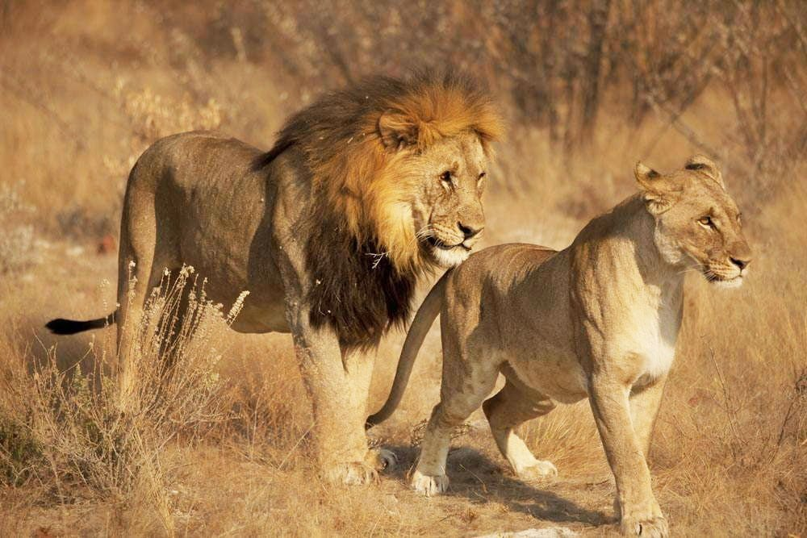
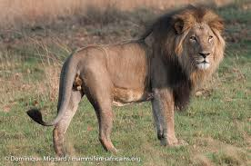
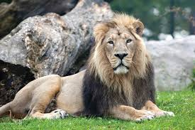
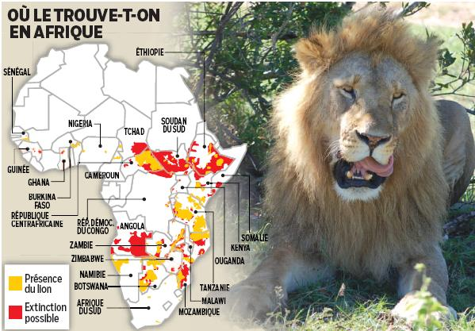

Bienvenue sur Le Roi de la Savane, un espace dédié à découvrir la majesté, la force et les secrets de vie du lion, symbole de puissance et de liberté.
Introduction
Le lion, surnommé le « roi de la savane », est l'un des animaux les plus emblématiques du continent africain. Puissant, majestueux et fascinant, il a captivé l’imagination des hommes depuis des millénaires. Dans ce blog, nous allons explorer son apparence, son comportement, son habitat, sa relation avec l'homme et l'importance de sa conservation.
1. Description générale du Lion
1.1 Apparence physique
Le lion est un grand félin au corps musclé et à la démarche imposante. Les mâles adultes se distinguent par leur crinière, plus ou moins fournie selon l’âge et la région. Leur pelage est généralement doré, tandis que les femelles sont légèrement plus petites et dépourvues de crinière. Un lion adulte peut peser entre 150 et 250 kg pour le mâle, et entre 120 et 182 kg pour la femelle.

Lion et une lionne
1.2 Espèces et sous-espèces
Il existe plusieurs sous-espèces de lions. Le lion d’Afrique est le plus répandu, vivant dans la savane et certaines zones de forêt ouverte. Le lion d’Asie, beaucoup plus rare, se rencontre principalement en Inde, dans le parc national de Gir. Ces sous-espèces diffèrent par la taille, l’épaisseur de la crinière et le comportement social.

Lion d'Afrique

Lion d'Asie
2. Habitat et Répartition
2.1 Zones géographiques
Les lions vivent principalement en Afrique subsaharienne, dans des pays comme le Kenya, la Tanzanie, l’Afrique du Sud ou le Botswana. Autrefois, leur territoire s’étendait de l’Afrique à certaines parties de l’Europe et du Moyen-Orient, mais il s’est considérablement réduit avec l’activité humaine.

2.2 Types d'habitats
Ils s’adaptent à différents types d’habitats : savanes, prairies, zones semi-désertiques et forêts ouvertes. Leur survie dépend de la disponibilité des proies et de la présence d’abris pour les lionceaux.
3. Comportement et mode de vie
3.1 Vie sociale
Le lion est un animal social, vivant en groupes appelés « prides ». Une pride se compose de femelles apparentées, de leurs lionceaux et de quelques mâles adultes. Les femelles chassent en coopération tandis que les mâles protègent le territoire et les lionceaux.
3.2 Chasse et alimentation
Le lion est un prédateur carnivore. Il chasse des animaux tels que les zèbres, les buffles, les antilopes et parfois des jeunes éléphants. Les femelles, plus agiles, organisent la chasse en groupe, utilisant la stratégie et la patience pour surprendre leurs proies.
3.3 Communication
Le rugissement du lion peut être entendu à plusieurs kilomètres et sert à marquer le territoire et à avertir les intrus. Les lions communiquent également par des gestes, des expressions faciales et des marquages olfactifs.
3.4 Reproduction et cycle de vie
La femelle donne naissance à 2 à 4 lionceaux après une gestation de 110 jours. Les lionceaux sont élevés collectivement par la pride. Les jeunes lions apprennent à chasser et à se défendre dès l’âge de 6 mois. En liberté, un lion peut vivre entre 10 et 14 ans, et jusqu’à 20 ans en captivité.
4. Lions et l’Homme
4.1 Symbolisme et culture
Le lion est un symbole de puissance, de courage et de royauté dans de nombreuses cultures. Il apparaît dans les contes africains, les films, les blasons et même dans certains proverbes.
4.2 Conservation et menaces
Les lions sont confrontés à de nombreuses menaces : braconnage, perte d’habitat due à l’agriculture et aux villages, conflits avec les humains et diminution des proies. Des programmes de protection et des sanctuaires tentent de préserver cette espèce emblématique.
4.3 Rôle écologique
En tant que prédateur au sommet de la chaîne alimentaire, le lion joue un rôle crucial dans le maintien de l’équilibre des écosystèmes. Il régule les populations d’herbivores, ce qui favorise la diversité de la flore et la santé globale de la savane.
Anecdotes et faits étonnants
Le rugissement du lion peut être entendu à plus de 8 kilomètres.
Un lion peut courir à une vitesse maximale de 50 km/h sur de courtes distances.
Les lions mâles défendent leur territoire avec acharnement et peuvent se battre violemment pour conserver leur place.
Certaines femelles adoptent même des lionceaux orphelins, démontrant un comportement social complexe et altruiste.
Conclusion
Le lion n’est pas seulement un symbole de force et de courage, mais aussi un acteur essentiel de l’écosystème africain. Sa conservation est cruciale pour préserver la biodiversité et la culture des régions où il vit. En protégeant le lion, nous protégeons un fragment vital de la nature et un héritage culturel précieux.
Commentaires